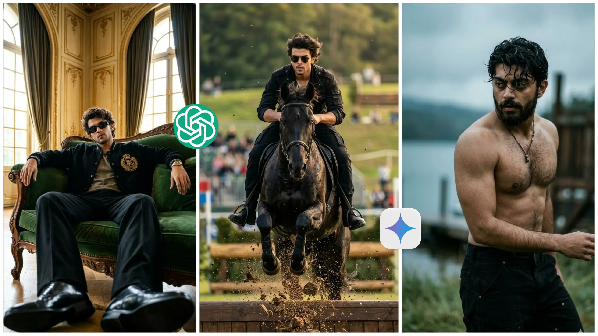

Home / Covert Your photo into Cinematic Masculine Look Prompt (Gemini, Chat Gpt)
Covert Your photo into Cinematic Masculine Look Prompt (Gemini, Chat Gpt)
By Prompt Library•15 April 2026

Creating a cinematic masculine look from your photo is one of the easiest ways to make your images stand out online. With tools like Gemini and ChatGPT, you can turn a normal photo into a bold, dramatic, and professional-looking portrait in just a few steps.
This style focuses on strong lighting, sharp details, and a confident mood.A cinematic masculine look usually includes dark tones, high contrast, and intense expressions. It gives your photo a movie-like feel, making it perfect for social media, personal branding, or creative projects. The right prompt plays a key role in getting this result.
In this article, you will learn how to convert your photo into a cinematic masculine look using simple prompts. Whether you are a beginner or already using AI tools, this guide will help you get better and more powerful results.
Want more awesome prompts?
Join our community and get the latest viral prompts daily.
Cinematic film still of a person [matching my uploaded reference photo] in a raw, gritty, outdoor environment. The style is ultra-photorealistic 8K, captured with a telephoto lens (around 85mm-135mm) at a wide aperture (f/1.8) creating an extremely shallow depth of field. The lighting is from a heavily overcast day, creating soft, diffused, cool-toned light that wraps around the muscles and creates deep but soft shadows.The subject is a shirtless person [use my reference photo for face, body type, and likeness], showcasing a very muscular and well-defined physique with extremely low body fat and visible chest hair. Their skin and short dark hair are soaking wet, with matted hair strands clinging to the forehead. They wear a full, rugged beard that is also damp. Their expression is intensely focused and weary, with furrowed brows and a stare directed off-camera to the left. The pose is dynamic, caught mid-motion as if turning or walking; the torso is twisted towards the right, while the head is turned back over the left shoulder. They are wearing a single simple necklace with a dark cord and a small, dark, rectangular pendant. Dark, heavy-duty black canvas pants are visible at the waist. The background is a heavily blurred bokeh of a remote, rustic lakeside setting. To the left, there's a steel-blue body of water under a grey sky. To the right are indistinct dark shapes of a wooden structure and a clothesline. The immediate foreground is blurry, desaturated green grass. The overall color grading is cinematic, with a heavily desaturated and moody palette. It employs a subtle, gritty orange-and-teal scheme: muted, earthy skin tones contrast with a strong steel blue and cyan cast in the shadows and environment. Blacks are crushed and tinted blue.The entire image is layered with a fine-to-medium film grain, giving it a textured, raw, and analog feel.The composition is a vertical (9:16) aspect ratio, tight medium shot, framing from the upper hips up. The subject is placed on the left third of the frame, creating significant negative space on the right. Mood is raw, powerful, somber, and intensely dramatic.--ar 9:16 --style raw --v 6.0
? AI PROMPT
Prompt:-
"Ultra realistic skin texture, pores visible, natural imperfections, cinematic color grading, no plastic skin, no Al artifacts, 8K, RAW DSLR quality Ultra-realistic 8K cinematic action ,shot of a stylish young Indian man riding a powerful black horse mid-air jump over a wooden obstacle.The man is wearing a black cargo-style jacket with sleeves folded, black cargo jogger pants, and black round sunglasses. His wavy hair is slightly blown by wind. Dirt and debris explode beneath the horse'
? AI PROMPT
Ultra-realistic fashion editorial portrait of a male model lounging on a luxurious vintage sofa in a grand room with ornate walls and large arched windows. The model wears black rectangular sunglasses, a black textured varsity-style jacket with a large emblem on the chest, a muted shirt underneath, wide-leg black trousers, and polished black dress shoes. Pose is relaxed, legs stretched toward the camera for dramatic foreshortening, arms resting on sofaApply on the same picture
Turning your photo into a cinematic masculine look is not complicated if you use the right prompts and tools. With Gemini and ChatGPT, you can easily control lighting, mood, and style to create a professional and eye-catching image.
The key is to keep your prompt clear and focused on details like lighting, background, and expression. Small changes in wording can make a big difference in the final output, so always experiment and refine your prompts.
Start practicing with your own photos and explore different cinematic styles. With time, you will be able to create stunning visuals that grab attention and make your content look premium.